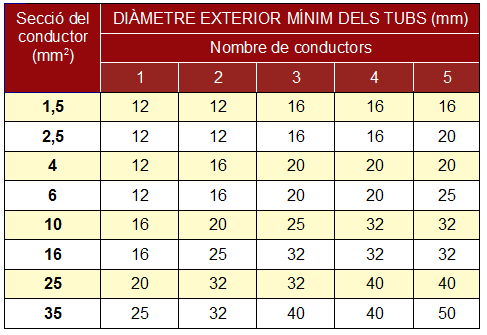

Canalització fixa en muntatge superficial
Es realitza generalment en edificacions ja construïdes, per exemple a l'interior d'instal·lacions industrials, on la maquinària fixa les necessitats de la instal·lació elèctrica. S'ha d'utilitzar preferentment el tub rígid i si existeix el risc de colps cap a la canalització, s'utilitzarà el tub metàl·lic.
Per a la realització d'aquest tipus d'instal·lacions es seguiran les següents instruccions:
- El traçat de les canalitzacions es farà preferentment seguint línies horitzontals i verticals. Ens podem ajudar d'un nivell làser de línies creuades.
- En trams rectes de canalitzacions, col·locarem les caixes de registre que creguem convenient, amb una separació màxima entre dues seguides, de 15 metres. De vegades, en canalitzacions molt llargues, els tubs s'uneixen amb altres tubs mitjançant unes peces destinades a tal fi anomenades maneguets.
- Quan es vulguen fer estanques les entrades dels tubs en les caixes de connexió, s'hauran d'utilitzar premsaestopes o ràcords adequats.
- Quan es produeix un canvi de direcció, els tubs es poden doblegar de manera manual mitjançant eines adequades (aplicant calor als tubs de PVC o de manera mecànica en els tubs metàl·lics), o bé mitjançant unes peces destinades a tal fi anomenades corbes.
- El nombre de corbes en angle situades entre dos registres consecutius no serà superior a 3.
- És convenient disposar els tubs, sempre que siga possible, a una altura mínima de 2,50 metres respecte del terra, a fi de protegir-los d'eventuals danys mecànics.
- Els tubs es fixaran a les parets o sostres per mitjà de brides o abraçadores protegides contra la corrosió i sòlidament subjectes. La distància entre aquestes serà, com a màxim, de 0,50 metres. Es disposaran fixacions d'una i una altra part en els canvis de direcció, en els entroncaments i en la proximitat immediata de les entrades en caixes, quadres, ...
- Els tubs hauran de tindre un diàmetre tal que permeten un fàcil allotjament i extracció dels cables o conductors aïllats. En la següent taula figuren els diàmetres exteriors mínims dels tubs en funció del número i la secció dels conductors o cables a conduir.


